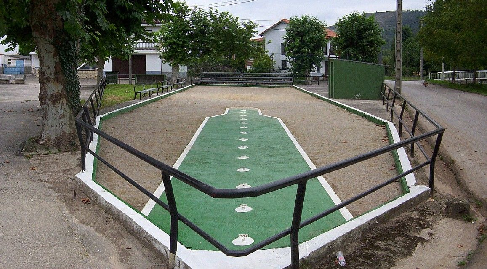
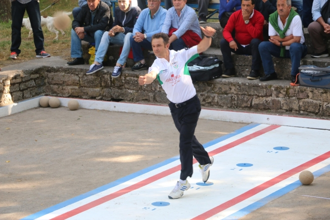

Hecho por Uly
BOLO PALMA CANTABRO
Los bolos: son 9, de madera de avellano o abedul, con una base de metal conocida como argolla. Estos se sitúan en la caja de la bolera encima de las estacas correspondientes. Tienen unas medidas de 45 cm de alto por 5 cm de diámetro. El emboque: En concurso, se sitúa a los laterales de la caja en función de si se juega a la mano o al pulgar (efecto que se da a la bola). En partido, existe una mayor libertad de movimiento del emboque que debe seguir una serie de reglas según la raya que se ponga. La bola: Posee forma esférica y en ocasiones para "ponerlas al peso" de núcleo metálico (plomo), están hechas con madera de encina. Su peso oscila normalmente entre los 1,5 y 2,3 kg. La bolera: La bolera se compone de tres partes: tiro, caja y birle. Las dimensiones de la bolera, de forma rectangular, serán en atención a la categoría de las Peñas, de unas determinadas medidas, si bien se aconseja la construcción de la bolera máxima (34 x 8 m). El tiro: Es la primera zona de la bolera, se trata de una superficie de cemento, tiene unas estacas, separadas entre sí con una distancia de 1 metro, para indicar los distintos tiros, estos tiros abarcan un rango desde los 10 metros hasta los 20 metros dependiendo de la bolera La caja: Es la segunda zona de la bolera. La caja abarca desde el fleje, chapa metálica alargada, hasta la tercera fila de bolos. En ella se encuentran las estacas en las que se sitúan los 9 bolos. En función de la caja, pueden existir estacas para el emboque a los lados de esta para situarlo en función de la mano a la que se tenga que tirar. El birle: Es la tercera parte de la bolera. Se trata de una zona de tierra, limpia de elementos. En ella se detendrán las bolas una vez lanzadas desde el tiro.
Se comienza la tirada lanzando las bolas desde el tiro (3 en el juego individual y 2 en peña). El jugador debe lanzar las bolas desde el tiro "volviéndolas" a la mano del emboque (a la mano o al pulgar). Las bolas lanzadas deben superar el fleje (en caso contrario, la bola no es válida y se dice que ha sido "morra"). Hay más situaciones de bolas no válidas: Caballo: Cuando la bola derriba en primer lugar el primer bolo de la fila de la mano del emboque o cualquiera de los tres bolos de la otra mano; Estacazo: Cuando la bola no supera la raya situada a la altura del bolo central, al dos, y queda a la otra mano del emboque; Caldera o caja: Cuando la bola queda encerrada dentro de los límites de la raya de juego y el fleje, en la caja, (cuando se juega a raya alta). Resumiendo, para que la bola sea válida ha de superar el fleje y derribar en primer lugar cualquier bolo de la hilera central (paralela a la línea de tiro) o el segundo o el tercer bolo de la fila de la mano del emboque, o bien que la bola pase "blanca" (sin derribar ningún bolo, siempre y cuando pase entre calles con bolos). Desde el tiro se puede lograr la jugada de mayor puntuación, el "emboque". Para "embocar" la bola lanzada desde el tiro tiene que derribar en primer lugar el primer bolo de la fila central (paralela a la línea de tiro) y tocar el emboque o bien pasar la raya (por detrás del emboque ), entre el emboque y el lateral de la pista de juego). Normalmente, el emboque vale diez más los bolos derribados en la jugada. Las bolas válidas se "birlan" desde el lugar que han quedado al lanzarlas desde el tiro. En este caso, no hay morras y se puede derribar en primer lugar cualquier bolo. Y así, con el birle, se completa la tirada. Mencionar que el bolo central se llama "panoja" y vale dos cuando es derribado él sólo, tanto desde el tiro como desde el birle. En una tirada se cuentan los bolos derribados desde el tiro y desde el birle. Modos de juego Se puede jugar a concurso o a partida. En un concurso se realizan 8 tiradas y en cada tirada se lanzan 3 bolas. El orden de tiradas es el siguiente: 2 tiradas a la mano y otras 2 al pulgar a "raya alta" (raya de concurso) desde el tiro corto y 2 tiradas a la mano y 2 al pulgar a "raya al dos" (sin caldera), desde el tiro largo. En una partida de bolos se juega el número de "chicos" pactado. Cada chico consta de dos tiradas (salvo que se "cierre"), ganando el chico quien derribe más bolos en el cómputo global de las dos tiradas. En caso de "cierre" gana el chico quien haya derribado más bolos en esa tirada. Para comenzar la partida se sortea la raya y el tiro (cara o cruz si se lanza una moneda, o bien, punta o coz si se lanza el emboque). Quien acierte elige poner en primer lugar tiro o raya. Si pone tiro en el primer chico, después le toca poner raya en el 2.º y así sucesivamente hasta el final de la partida. En cada chico se pone primero el tiro y después la raya. Si el juego es individual se dice que la partida es a corro libre. Cada jugador tira tres bolas y se cierra con 20 bolos. Si la partida es entre "peñas" se juegan, generalmente, 6 chicos. Una peña está formada por 4 jugadores y cada jugador lanza 2 bolas. En este caso, para "cerrar" hay que hacer 40 bolos. La Liga de Bolos se juega entre peñas y los campeonatos se juegan a concurso (individual y por parejas).
Juego de bolos de derribo de Cantabria y zona oriental de Asturias. Nueve bolos que se colocan sobre una base de hierro o acero y otro más pequeño llamado emboque. Todos los bolos cuentan uno excepto el del medio que cuenta dos si se derriba en solitario, y la jugada del emboque que puede valer de 10 a 40 bolos. Primero se lanzas las bolas por el aire desde el tiro (tirar), una señal situada a una distancia entre 6 y 20 metros en función de la edad y categoría de los jugadores, con el fin de derribar el mayor número de bolos o hacer emboque. Luego se devuelven las bolas (birlar) desde el punto en el que se detuvieron, para derribar el mayor número de bolos (ya no hay emboque). Se juega liga y copa por equipos de cuatro jugadores con dos bolas cada uno, y los campeonatos y concursos por parejas o individualmente (tres bolas por jugador). Es la especialidad que creó la Federación Española en 1941.